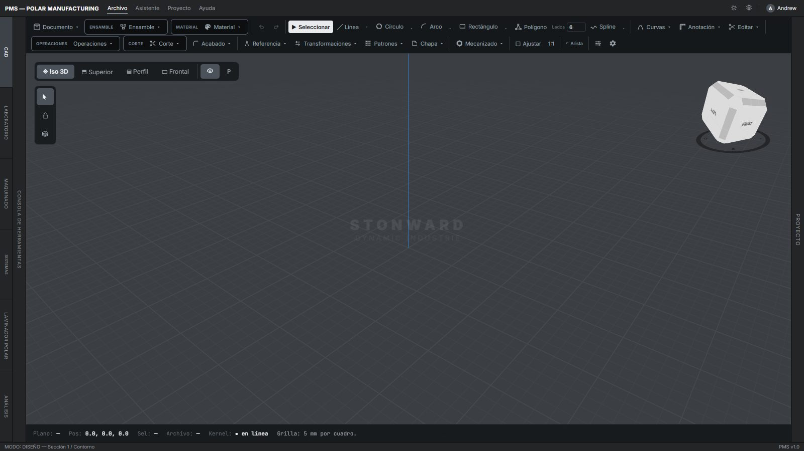
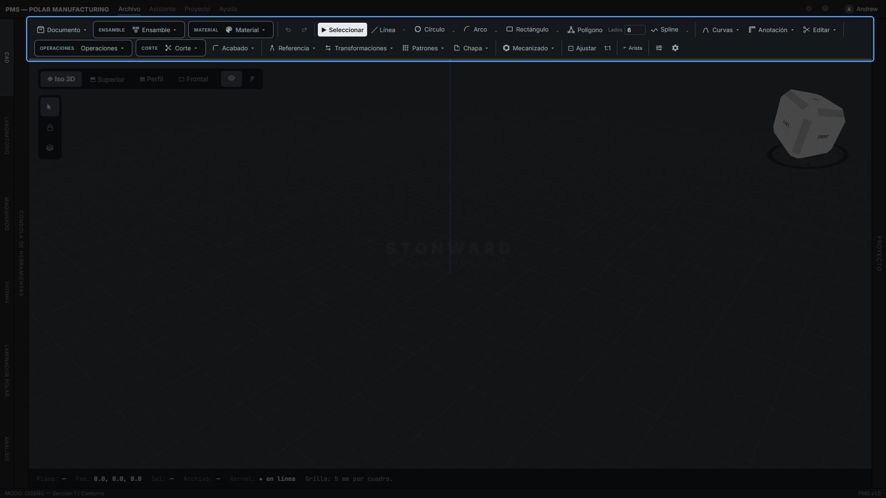
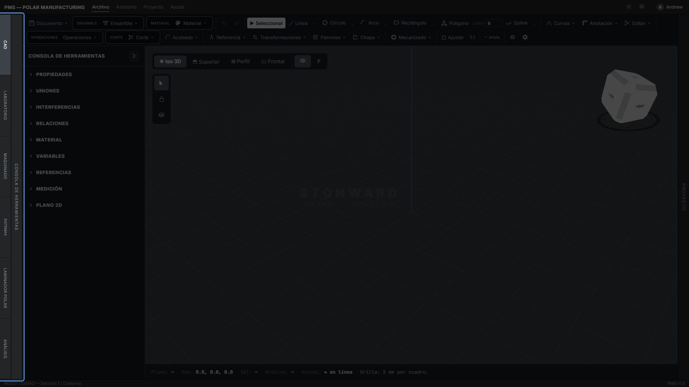
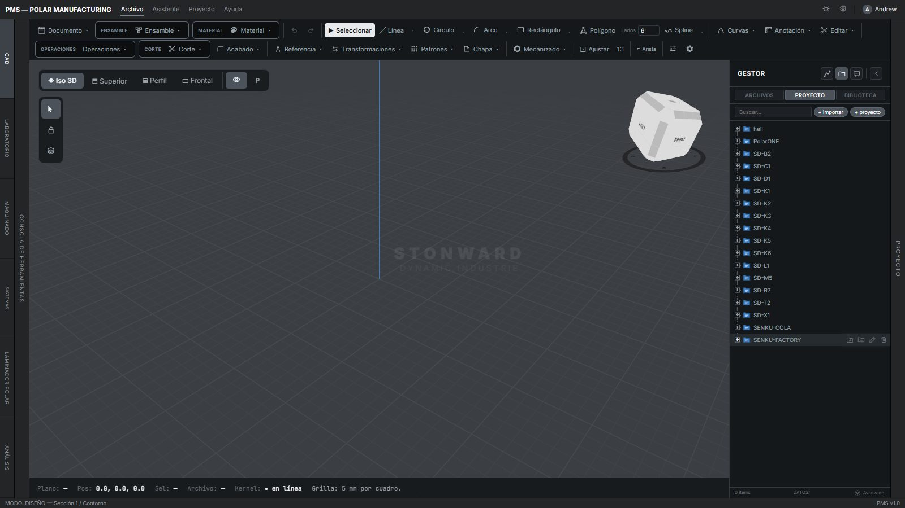

Guardar
Sin panel. Guarda la pieza (.pms.json) en su proyecto. Atajo Ctrl+S
Gracias por elegir SolidMaker. Este manual le acompaña desde la primera vez que abre el programa hasta su primera pieza fabricada.
Cada pantalla, cada menú y cada herramienta aparece aquí con una captura real del programa y la explicación de sus campos: qué significa cada uno, en qué unidad se escribe y qué valor trae de fábrica. Si en algún momento no sabe qué hace un botón, búsquelo en el índice de herramientas: todas tienen su propio enlace.
Su software cuenta con los siguientes módulos. Todos trabajan sobre el mismo proyecto: la pieza que dibuja en PolarCAD es la misma que prueba en Laboratory, lamina en PolarSlicer y fabrica con Machin. Los módulos se eligen en la columna izquierda de la pantalla.
Diseño de piezas y ensambles. Es el módulo con el que se empieza.
DocumentadoControl y simulación de máquinas con su gemelo 3D.
En preparaciónTrayectorias de impresión cartesiana y polar.
En preparaciónBanco de pruebas: electrónica, PLC e interferencias.
En preparaciónAnálisis de ingeniería y simulación de fluidos.
En preparaciónAl entrar a PolarCAD verá esta pantalla. Tiene cinco zonas, y conviene conocerlas antes de dibujar la primera línea.

Las dos filas de arriba. Aquí están todas las herramientas de dibujo y de operación.
Zona 2A la izquierda. Cambia de módulo y abre la configuración de cada herramienta y del objeto.
Zona 3El centro. Vistas, cubo de orientación y la grilla de trabajo.
Zona 4A la derecha. Sus proyectos, archivos y la biblioteca de piezas.
Zona 5Abajo. Plano activo, posición del cursor, selección y archivo abierto.
Observe en su pantalla la barra resaltada: corresponde a las herramientas. Está ordenada de izquierda a derecha en el mismo orden en que normalmente se trabaja.
Fila 1: el documento, el ensamble y el material; deshacer y rehacer; las herramientas de dibujo del croquis; curvas, anotación y edición.
Fila 2: las operaciones que convierten el croquis en sólido, los cortes, acabados, referencias, transformaciones, patrones, chapa, mecanizado y, al final, la vista y los ajustes.
Los botones con una flecha ▾ abren un menú. Debajo encontrará el índice completo: cada nombre lleva a la explicación de esa herramienta.

La columna vertical del borde izquierdo cambia de módulo: CAD, Laboratorio, Maquinado, Sistemas, Laminador polar y Análisis.
A su lado se despliega la Consola de herramientas. Desde ella encontrará la configuración de cada herramienta, así como la configuración del objeto seleccionado. Sus apartados son: Propiedades, Uniones, Interferencias, Relaciones, Material, Variables, Referencias, Medición y Plano 2D.
Cuando elige una operación de la barra, sus campos aparecen aquí con los botones Aplicar y Cancelar.

Arriba a la izquierda están las vistas Iso 3D, Superior, Perfil y Frontal; el ojo muestra u oculta elementos y P cambia la proyección. Debajo, tres botones: seleccionar, bloquear y capas.
El cubo de la esquina superior derecha indica la orientación y permite girar la vista con un clic en sus caras. La grilla del fondo mide 5 mm por cuadro (se cambia en Vista y ajustes).
El panel derecho se abre con la pestaña vertical Proyecto. Tiene tres pestañas: Archivos, Proyecto y Biblioteca.
Por su parte, la pestaña Proyecto cuenta con todos sus proyectos en forma de árbol, como el Explorador de Windows: cada carpeta se abre con [+] y guarda sus piezas, ensambles, exportaciones y versiones. Con + importar trae archivos de su equipo y con + proyecto crea uno nuevo. Al pasar el cursor sobre un proyecto aparecen los botones para crear carpeta, renombrar y eliminar.
La pestaña Biblioteca reúne 1 535 piezas normalizadas en 81 familias (tornillos, tuercas, rodamientos, perfiles, motores) listas para insertar.

La línea inferior del visor le dice en todo momento dónde está: Plano activo, Pos (coordenadas X, Y, Z del cursor en mm), Sel (lo seleccionado), Archivo abierto, estado del Kernel de geometría exacta y el tamaño de la Grilla. Debajo, el modo de trabajo (Diseño) y la sección actual.
Las herramientas marcadas como Próximamente ya aparecen en la barra pero todavía no están activas en esta versión.